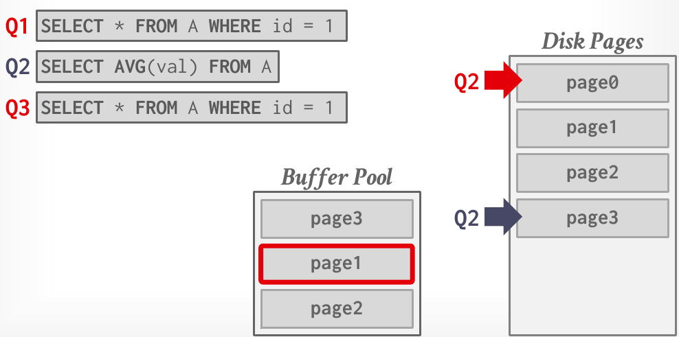
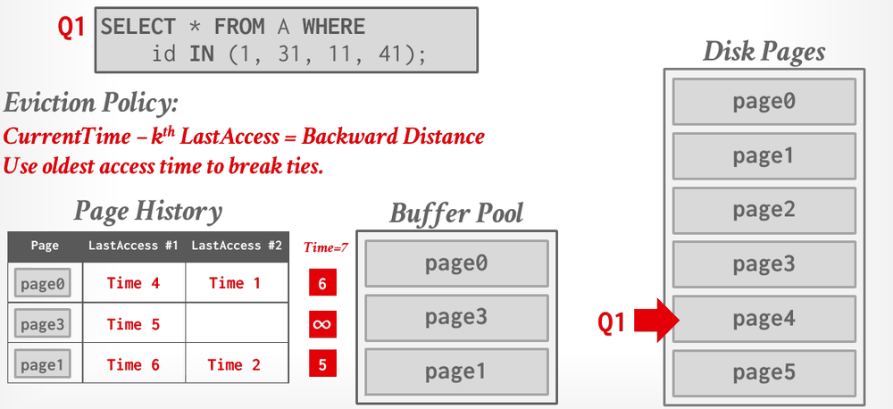
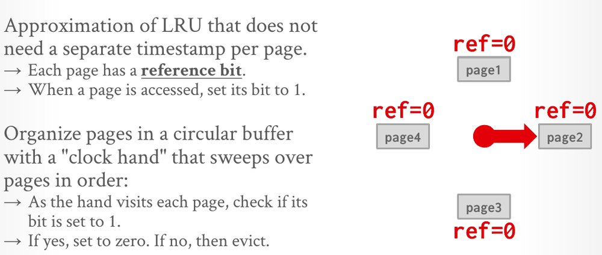

Database Internals in Go · Unit 2 · Lesson 2
Replacement Policies: LRU, CLOCK, LRU-K, ARC
Predict which page a buffer pool evicts under LRU, CLOCK, LRU-K and the ARC variant of Project 1, and explain why plain LRU loses its useful pages to a single table scan.
When a request misses and the free list is empty, the buffer pool has to reuse a frame that holds some other page. The replacement policy decides which page goes. A good choice keeps the pages that will be needed soon; a bad one turns future hits into disk reads. Lecture #04 builds up from LRU to ARC, the policy your ArcReplacer implements in the next two lessons.
HW2 Q3(b): table R(a) is compressed column by column. Making no assumptions about a's type or value distribution, which set lists exactly the schemes whose space efficiency benefits from sorting the table on a first?
CMU's official HW2 solution names one problem with log-structured storage: write amplification. Where does it come from?
t(id, email) holds (1, 'a@cs'), (2, NULL), (3, NULL), (4, 'b@cs') and (5, 'b@cs'). What does SELECT COUNT(*), COUNT(email), COUNT(DISTINCT email) FROM t; return?
What a replacement policy decides
Slide 17 lists four goals for a replacement policy: correctness, accuracy, speed, and low metadata overhead. The notes add the one rule every policy must obey: a pinned page cannot be evicted. Speed and overhead matter as much as accuracy, because the policy's bookkeeping runs on every page access.
In Project 1 the policy lives in ArcReplacer. The BPM reports every access with RecordAccess and every change in pinning with SetEvictable, and it calls Evict only when its free list is empty. Evict returns a frame ID; writing back a dirty victim and reusing the frame are the BPM's job.
LRU and sequential flooding
Least recently used (LRU) keeps a timestamp of each page's last access and evicts the page with the oldest one. Keeping the pages sorted, as a list from newest to oldest, makes the victim quick to find. In the slide's example, when Q1 accesses page1, page1 moves to the newest end of the list. The notes point out the cost: keeping the structure sorted and storing large timestamps has a prohibitive overhead.
LRU also has an accuracy problem. A sequential scan reads every page of a table, sometimes more than once (for example, in a nested-loop join), and most of those pages are never read again. Under LRU each freshly scanned page counts as the most recently used, so the scan pushes out pages that other queries still need. Lecture #04 calls this sequential flooding: the scan pollutes the buffer pool with pages that are read once and then never again.

Slide 20 draws the lesson for analytical workloads: in OLAP workloads, the most recently used page is often the best page to evict.
Policies that resist sequential flooding
LRU looks only at when a page was last used, not at how often. Least frequently used (LFU) counts each page's accesses and evicts the page with the lowest count, so a page that a scan touches once loses to a page that is read all the time. The lecture names two problems with LFU: its implementation complexity is logarithmic in the cache size, and it ignores time, so stale pages with high counts that may no longer be relevant pile up.
LRU-K (1993) balances recency and frequency. It records the timestamps of each page's last K accesses and evicts the page whose K-th most recent access is oldest. In the slides' terms, it computes each page's backward distance, CurrentTime − (time of the K-th most recent access), and evicts the page with the largest. A page with fewer than K recorded accesses has a backward distance of ∞, so it goes first, and ties go to the page with the older access time. So that a page that returns soon after its eviction isn't always evicted again, LRU-K also keeps a ghost cache: an in-memory history of recently evicted pages, without their data.

The notes add that LRU-K has a higher storage overhead. MySQL approximates it with a single LRU list that has two entry points, a young part and an old part. A new page enters at the head of the old part and moves to the head of the young part only if it is accessed again while it is in the old part; evictions come from the end of the old part. A page that a scan touches once never reaches the young part.
Two more ideas use what the DBMS knows about its queries. With localization, the DBMS chooses which pages to evict on a per-query basis, tracking the pages each query has accessed, which limits how much any one query pollutes the pool. PostgreSQL, for example, gives a query a limited number of buffer pool pages and uses them as a circular ring buffer. With priority hints, the DBMS tells the buffer pool which pages are important, based on each page's role during query execution. In the slide's example, the root page of an index gets high priority and its leaf pages low priority, under a workload of INSERT INTO A VALUES (id++) and SELECT * FROM A WHERE id = ?.
CLOCK: LRU without timestamps
Exact LRU needs a sorted structure and a timestamp per page. CLOCK (1969) approximates LRU with one reference bit per page, set to 1 whenever the page is accessed. The pages sit in a circular buffer with a clock hand. When the DBMS needs a victim, the hand sweeps forward. A page whose bit is 1 has its bit cleared and is passed over, and the first page whose bit is already 0 is evicted. The new page takes that slot, the hand moves on, and the clock remembers its position for the next eviction. The notes mention that some implementations keep a counter instead of a single bit.

Because CLOCK approximates LRU, it shares LRU's weakness: slide 20 lists both as susceptible to sequential flooding. Project 1 doesn't ask for CLOCK, LRU or LRU-K. BusTub has stub files for them, but the writeup requires only the ARC replacer, and the Go module ports only ArcReplacer.
#04 Memory Management, "Replacement policies" (36:20), slides 17–25: replacement goals, LRU, CLOCK, sequential flooding, LFU, LRU-K and MySQL's approximation.
ARC as the lecture presents it
Adaptive Replacement Cache (ARC) was developed at IBM Research (2003). The slides note that only IBM DB2, PostgreSQL and ZFS implement it, and that PostgreSQL rewrote its version to avoid IBM's patent. ARC handles both recency, like LRU, and frequency, like LFU. It keeps two lists of cached pages and adapts their sizes to the workload's access pattern, and it keeps two ghost lists that remember recent evictions so it can adapt quickly. Slide 27 defines five pieces:
- T1, the recent list, holds pages that have been accessed once recently.
- B1, the recent ghost list, is the history of pages recently evicted from T1.
- T2, the frequent list, holds pages that have been accessed at least twice.
- B2, the frequent ghost list, is the history of pages recently evicted from T2.
- The target size p sets how much ARC favors recency (T1) over frequency (T2).
A page can be in only one list at a time. A hit in T1 promotes the page to T2, and a hit in T2 keeps it there. A miss whose page is found in B1 means that a slightly larger T1 would have kept the page cached, so ARC increases p and moves the page into T2, since it has now been accessed again. A miss found in B2 decreases p, and that page also goes into T2.
Project 1 renames the lists. Here is how the names line up:
| Lecture (and the ARC paper) | Project 1 writeup | Go field in ArcReplacer |
|---|---|---|
| T1, recent list | MRU list | mru |
| T2, frequent list | MFU list | mfu |
| B1, recent ghost list | MRU ghost list | mruGhost |
| B2, frequent ghost list | MFU ghost list | mfuGhost |
| p, target size | MRU target size | mruTargetSize |
| c, cache size (BusTub's comments use the paper's letter) | capacity, replacer_size_ | replacerSize |
In Project 1, MRU and MFU are names of lists, not eviction rules. The MRU list holds pages recently accessed exactly once, the MFU list holds pages recently accessed more than once, and nothing counts exact frequencies.
#04 Memory Management, "MySQL and ARC algorithms" (58:07), slides 26–31: ARC's lists and lookup protocol, then localization and priority hints.
ARC as Project 1 specifies it
The writeup calls its version a variant of ARC and gives exact rules, which the BusTub C++ comments and the Go doc comments in arc_replacer.go repeat. Each list has a front, its most recent end, and a back, its least recent end. The MRU and MFU lists hold alive entries, pages that are in the buffer pool, identified by frame ID. The ghost lists hold only page IDs, because an evicted page has no frame. That is why the Go starter keys aliveMap by common.FrameID and ghostMap by common.PageID.
The writeup warns about five different sizes:
| Size | In Go | Meaning |
|---|---|---|
| capacity c | replacerSize | the number of frames in the buffer pool |
| total of the four lists | can reach 2c, because the ghost lists remember evicted pages | |
| evictable size | currSize, returned by Size() | the alive entries currently marked evictable; it starts at 0 |
| MRU target size p | mruTargetSize | starts at 0 and adapts to the workload |
| actual MRU size |MRU| | mru.Len() | may be larger or smaller than p |
An entry that enters the replacer starts out non-evictable, because the BPM calls RecordAccess right after pinning a page. Only SetEvictable changes the flag, and it adjusts Size() only when the flag really changes. The Go doc comment states this rule, which the writeup leaves implicit.
RecordAccess(frameID, pageID, accessType) handles exactly one of four cases. The accessType argument only matters for the optional leaderboard.
- The frame is alive in MRU or MFU, a real cache hit. Move the entry to the front of MFU. Its evictable flag and p stay as they are.
- The page is in the MRU ghost list, a pseudo-hit. Raise p by 1 if |MRU ghost| ≥ |MFU ghost|, otherwise by ⌊|MFU ghost| / |MRU ghost|⌋, but never above c. Then put the page at the front of MFU, in the frame passed to the call.
- The page is in the MFU ghost list. This is the mirror image: lower p by 1 if |MFU ghost| ≥ |MRU ghost|, otherwise by ⌊|MRU ghost| / |MFU ghost|⌋, but never below 0. Then put the page at the front of MFU.
- The page is in no list. (a) If |MRU| + |MRU ghost| = c, kill the last (oldest) entry of the MRU ghost list. (b) Otherwise, if the four lists together hold 2c entries, kill the last entry of the MFU ghost list. (c) Otherwise kill nothing. Then add the page at the front of MRU.
Ghost hits go to MFU because the page has now been seen twice. They are still cache misses for the BPM, which must read the page from disk; only the policy treats them as hits. The writeup's reason for moving p is that after an MRU-ghost hit, a slightly larger MRU list would have kept the page cached, so the target for MRU grows, and an MFU-ghost hit argues the other way. The ratio rule moves p faster when the other ghost list is much longer: with 2 entries in the MRU ghost list and 3 in the MFU ghost list, an MRU-ghost hit adds ⌊3/2⌋ = 1. Measure both ghost lists before removing the page that was hit, as the writeup's order of steps implies; measuring afterwards could divide by zero. A killed ghost is forgotten, so if that page comes back later, it is a plain miss. RecordAccess never evicts anything and never changes Size().
Evict() picks a side by comparing the MRU list's actual size with the target:
- If |MRU| < p, it tries MFU first. Otherwise, including when |MRU| = p, it tries MRU first.
- Within a list it walks from the back toward the front, skips entries that aren't evictable, and takes the first evictable one. If the preferred list has none, it tries the other list.
- The victim's page ID goes to the front of its own list's ghost list,
Size()drops by 1, andEvictreturns the victim's frame ID andtrue. If neither list has an evictable entry, it returns(common.InvalidFrameID, false).
|MRU| counts every entry in the MRU list, pinned ones included. The writeup defines the actual size as mru_.size(), and the public SampleTest passes only if pinned entries count (step 10 of the trace below). Evict never changes p and never trims a ghost list. The last method, Remove(frameID), is for deleted pages: it drops an evictable frame without leaving a ghost, panics on a frame that isn't evictable, and ignores a frame it doesn't know.
BusTub stores p in a size_t, which is unsigned, so p − delta wraps around instead of going negative. The Go starter uses int for mruTargetSize and the sizes, which avoids that trap. Go's / on non-negative integers rounds down, which is the writeup's "rounded down", and the built-in min and max (Go 1.21 and later) turn each clamp into a single expression.
A worked trace of SampleTest
TestArcEvictionSampleTest in arc_replacer_test.go is the Go port of BusTub's ArcReplacerTest.SampleTest, one of the two public tests you'll run in P1.2. Work through it before writing any code: read each step, predict the result, then open the box to check. The replacer is NewArcReplacer(7), so c = 7, p starts at 0 and all four lists are empty.
The states list each list front to back, most recent first. (7,f2) is page 7 in frame 2, evictable; p(6,f6) is page 6 in frame 6, not evictable ("pinned"); a bare number in a ghost list is a page ID. The test's own comments use the same entries but draw the state as [MRU ghost][MRU]![MFU][MFU ghost], with the freshest entries next to the !, so its two MRU-side lists read back to front.
-
RecordAccess(i, i, AccessUnknown)for i from 1 to 6, so page i lands in frame i. ThenSetEvictable(i, true)for frames 1 to 5, andSetEvictable(6, false).Predict: which list holds the six pages, in what order, and what does
Size()return?Check step 1
MRU ghost [] MRU [p(6,f6), (5,f5), (4,f4), (3,f3), (2,f2), (1,f1)] MFU [] MFU ghost [] p = 0 Size() = 5Each first access misses all four lists (case 4(c)), so each page goes to the front of MRU, not evictable. Frames 1 to 5 then become evictable.
SetEvictable(6, false)changes nothing, because frame 6 was never evictable.Size()counts evictable entries only, so it is 5, not 6. -
RecordAccess(1, 1, AccessUnknown).Predict: where does page 1 go, and does
Size()change?Check step 2
MRU ghost [] MRU [p(6,f6), (5,f5), (4,f4), (3,f3), (2,f2)] MFU [(1,f1)] MFU ghost [] p = 0 Size() = 5Case 1. Frame 1 is alive in MRU, so this is page 1's second access, and the entry moves to the front of MFU. Its evictable flag stays as it was, so
Size()is still 5. -
Evict(), three times.Predict: which three frames come back, and in what order?
Check step 3
The calls return frames 2, 3 and 4, in that order.
MRU ghost [4, 3, 2] MRU [p(6,f6), (5,f5)] MFU [(1,f1)] MFU ghost [] p = 0 Size() = 2Each time |MRU| ≥ p = 0, so MRU is tried first. Victims come from the back of MRU, its least recently used end, so pages 2, 3 and 4 leave in that order, and each page ID goes to the front of the MRU ghost list.
-
RecordAccess(2, 7, AccessUnknown), thenSetEvictable(2, true).Predict: page 7 has never been seen. Does anything get killed from a ghost list?
Check step 4
MRU ghost [4, 3, 2] MRU [(7,f2), p(6,f6), (5,f5)] MFU [(1,f1)] MFU ghost [] p = 0 Size() = 3Case 4. |MRU| + |MRU ghost| = 2 + 3 = 5, which is less than c = 7, and the four lists hold 6 entries, fewer than 2c = 14, so nothing is killed (case 4(c)). Page 7 goes to the front of MRU in frame 2, which the first eviction freed.
-
RecordAccess(3, 2, AccessUnknown), thenSetEvictable(3, true).Predict: page 2 is in the MRU ghost list. What happens to p, and where does page 2 go?
Check step 5
MRU ghost [4, 3] MRU [(7,f2), p(6,f6), (5,f5)] MFU [(2,f3), (1,f1)] MFU ghost [] p = 1 Size() = 4Case 2. |MRU ghost| = 3 ≥ |MFU ghost| = 0, so p goes up by 1. Page 2 comes back in a new frame, 3, at the front of MFU, because this is its second access. For the BPM it is still a miss: page 2's bytes must be read from disk.
-
RecordAccess(4, 3, AccessUnknown)andSetEvictable(4, true), thenRecordAccess(7, 4, AccessUnknown)andSetEvictable(7, true).Predict: what is p after both?
Check step 6
MRU ghost [] MRU [(7,f2), p(6,f6), (5,f5)] MFU [(4,f7), (3,f4), (2,f3), (1,f1)] MFU ghost [] p = 3 Size() = 6Two more MRU-ghost hits. Each time |MRU ghost|, first 2 and then 1, is at least |MFU ghost| = 0, so p goes up by 1 twice.
-
Evict().Predict: does the victim come from MRU or from MFU?
Check step 7
It returns frame 5.
MRU ghost [5] MRU [(7,f2), p(6,f6)] MFU [(4,f7), (3,f4), (2,f3), (1,f1)] MFU ghost [] p = 3 Size() = 5|MRU| = 3 and p = 3. A tie goes to MRU, and MRU's back entry, page 5 in frame 5, is evictable.
-
Evict()again.Predict: which side this time, and which frame?
Check step 8
It returns frame 1.
MRU ghost [5] MRU [(7,f2), p(6,f6)] MFU [(4,f7), (3,f4), (2,f3)] MFU ghost [1] p = 3 Size() = 4Now |MRU| = 2 < p = 3, so MFU is tried first. Its back entry is page 1 in frame 1, which goes to the front of the MFU ghost list.
-
RecordAccess(5, 1, AccessUnknown), thenSetEvictable(5, true).Predict: page 1 is in the MFU ghost list. What is p now?
Check step 9
MRU ghost [5] MRU [(7,f2), p(6,f6)] MFU [(1,f5), (4,f7), (3,f4), (2,f3)] MFU ghost [] p = 2 Size() = 5Case 3. |MFU ghost| = 1 ≥ |MRU ghost| = 1, so p goes down by 1. Page 1 returns to the front of MFU, in frame 5 this time.
-
Evict().Predict: one of the two MRU entries is pinned. Which frame comes back?
Check step 10
It returns frame 2.
MRU ghost [7, 5] MRU [p(6,f6)] MFU [(1,f5), (4,f7), (3,f4), (2,f3)] MFU ghost [] p = 2 Size() = 4|MRU| = 2, counting the pinned page 6, and p = 2, so MRU is tried first. Its back entry, page 6, isn't evictable and is skipped, and page 7 in frame 2 is evicted. Counting only evictable entries would give 1 < 2 and the wrong victim, frame 3 (page 2, at MFU's back). The test expects 2.
Where Project 1's ARC differs from the paper and the slides
The writeup says Project 1 doesn't require the original ARC algorithm exactly. The comment on Evict in BusTub's arc_replacer.cpp, copied into the Go starter, lists two deliberate changes from the paper:
- When |MRU| equals the target size,
Evicttakes from MRU without checking the last access, as the paper does. The comment explains that the paper itself calls this choice arbitrary. - Entries that aren't evictable are skipped. If every entry on the preferred side is pinned,
Evicttakes a victim from the other side, and that victim goes to its own list's ghost list.
The structure differs too. In the paper, the replacement step happens inside the routine that handles an access. In Project 1, RecordAccess does all of the list bookkeeping except the replacement, and Evict performs the replacement when the BPM needs a frame.
Slide 29's rule for a complete miss is a simplified summary, and it differs from the writeup. For the project, the writeup wins:
| Lecture #04, slide 29 | Project 1 writeup | |
|---|---|---|
| Page in no list | If T1 + B1 is full, evict from B1 or T1. If T2 + B2 is full, evict from B2 or T2. Insert the page into T1. | If |MRU| + |MRU ghost| = c, kill the oldest MRU-ghost entry. Otherwise, if the four lists hold 2c entries, kill the oldest MFU-ghost entry. Insert the page at the front of MRU. |
| Can the access evict a cached page? | Yes, from T1 or T2 | No; only Evict removes cached pages |
Check your understanding
Replay slide 21's workload under LRU-2 (K = 2) with the same 3-frame pool. Q1 reads page0 at Time 1. Q2 then reads page0 at Time 2 (a hit), page1 at Time 3 and page2 at Time 4, and needs a frame for page3 at Time 5. Using slide 24's rules, which page does LRU-2 evict?
Continue slide 19's CLOCK example. page5 has just replaced page2, and the hand has moved on to page3. Going clockwise from the hand, the pages are page3 (bit 1), page4 (bit 1), page1 (bit 0) and page5 (bit 0). Another victim is needed. What happens?
An ArcReplacer has capacity 4 and p = 0. MRU = [p(12,f2)]: page 12 in frame 2, not evictable. MFU, front to back, is [(10,f0), (11,f1)], both evictable. Both ghost lists are empty. What does Evict() return, and where does the victim's page ID go?
An ArcReplacer has capacity c = 3 and p = 3. MRU = [(7,f2), (6,f1)], MFU = [], MRU ghost = [5], MFU ghost = [4, 1, 3]. RecordAccess(3, 5, AccessUnknown) is called. What is p afterwards, and where does page 5 go?
An ArcReplacer has capacity c = 3 and p = 3. MRU = [(7,f2), (6,f1)], MRU ghost = [], MFU = [], and MFU ghost = [5, 4, 1, 3], front to back. Page 2 is in no list, and RecordAccess(3, 2, AccessUnknown) is called. What happens?
Primary sources: CMU 15-445/645 Fall 2025 Lecture #04 slides 17–31 and notes (section 4); the Project #1 writeup, Task #1 ("ARC Replacement Algorithm" and "Implementation"); BusTub src/include/buffer/arc_replacer.h, src/buffer/arc_replacer.cpp and test/buffer/arc_replacer_test.cpp at commit d49b823; this course's bufferpool/arc_replacer.go and bufferpool/arc_replacer_test.go.